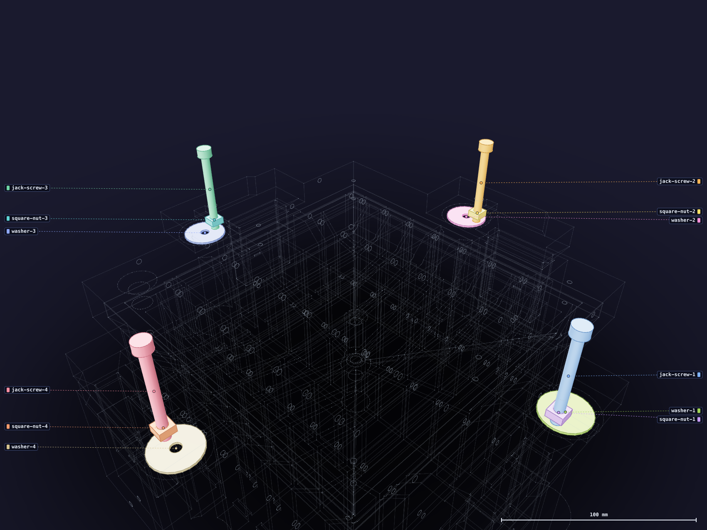

Steel19
Fit the four jacks
One station repeats at each side of the mold. A screw threads through a square nut captured in the core's arm and rests its tip on a steel washer sitting in the cavity. Turning it down cannot push the washer anywhere, so the core goes up instead.

- Slide one square nut into each core arm from its outboard edge, into the side-entry slot.
- Pass a screw down through the arm and into the nut to retain it. The nut is captured by the screw, not pressed in — it is meant to be a little loose until then.
- Lay one washer flat in each cavity pocket. The screw tip lands on the solid ring, not the hole; the axis is deliberately off-centre.
- Back all four screws out until their tips clear the washers with the core seated.
Keep the screw ends flat
A burr on a screw tip ploughs the washer, and a deeply scored washer gets replaced rather
than reused. Check the four tips before they ever touch steel.